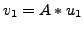
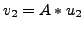
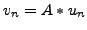

Efficient use of the memory subsystem is important to the performance of many scientific simulations. For calculations, such as matrix-matrix multiplication, that perform many operations per data access, tuning techniques like blocking are effective in reducing memory traffic and result in computationally bound routines. However, other calculations like matrix-vector multiplies that perform a small number of operations per memory access remain memory bound even when tuned. To improve the performance of these memory-bound computations, multiple computations that access the same data can be combined using loop fusion.
One issue in using loop fusion to tune programs is the difficulty of determining when it is profitable. Loop fusion can substantially reduce data access and speedups. Yet, in some circumstances, it can be detrimental to performance. The following code shows loop fusion applied to the GEMVER kernel of the updated BLAS.
| for j = 1:n | A(:, j) A(:,j) + u1 * v1(j) |
When a column of matrix  remains in cache throughout an
iteration of the loop, the fused implementation reads that column only
once from main memory during that iteration. When just two vectors fit
in cache, fusing the first two scaled vector additions forces the column
of
remains in cache throughout an
iteration of the loop, the fused implementation reads that column only
once from main memory during that iteration. When just two vectors fit
in cache, fusing the first two scaled vector additions forces the column
of  to be evicted meaning that it must be reread when accessed again.
This example demonstrates that creating an
efficient fused routine requires careful consideration of both algorithm
and memory subsystem.
to be evicted meaning that it must be reread when accessed again.
This example demonstrates that creating an
efficient fused routine requires careful consideration of both algorithm
and memory subsystem.
Additionally, the number of ways that loops can be fused expands exponentially with routine complexity. With increasingly involved routines, it becomes infeasible to program and test more than a few variants, and and it becomes more difficult to identify the the most efficient fusion. To automate the process of searching through loop fusion choices, we created the Build to Order (BTO) compiler. BTO takes in a sequence of annotated MATLAB statements, searches through all possible loop fusion combinations that reduce memory traffic, and generates optimized C code. An analytic model that estimates the cost of routines helps to explore the search space produced by the compiler. Specifically, the model reduces the number of routines that need to be empirically tested by the compiler to a small subset. The combined analytic/empirical search technique produces tuned codes efficiently.
To improve on our model and to understand the effects of fusion on traffic through the memory hierarchy, we ran experiments fusing successive matrix-vector multiplies. In these tests, each multiply used the same coefficient matrix and different vectors, e.g., , , ..., . The results show that fusion becomes unprofitable when a memory structure can no longer contain all the data accessed within the fused loop.
In this talk we present the results from our matrix-vector multiply experiments that show how fusing too many operations can have negative effects on the use of the memory subsystem. One focus is how fusion can impact the ability of the compiler to keep data within registers. We demonstrate how, by modeling registers, we improve the predictive capabilities of our model to account for compiler allocation of registers. We also discuss how our findings are important to keep in mind when developing codes for multi-core processors and other parallel machines.